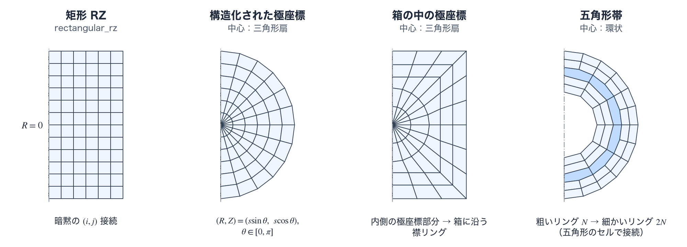
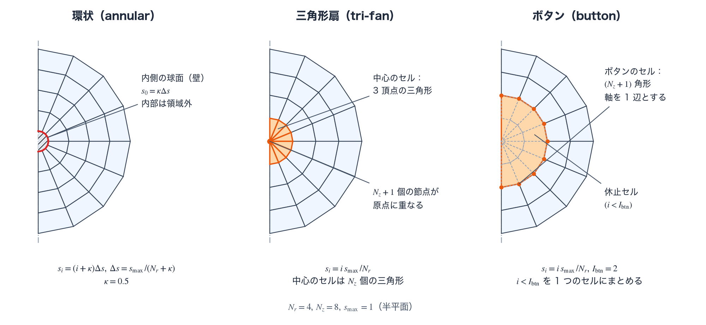

2D RZ メッシュ: 構造格子とマルチブロック reference
2D のメッシュは、論理格子と接続関係（mesh topology）の組合せでできる。論理格子は Mesh.logical_mesh_2d で選び、構造矩形（structured rectangular）、球面極座標（spherical polar）、箱の中の極座標（polar-in-box）、円錐殻（cone shell）がある。接続関係は Mesh.topology_scheme で選び、単一ブロックか、CSR（compressed sparse row）で接続するマルチブロックである。いずれの系統（family）も、回転体としての RZ 体積、コーナーの幾何、節点・セル・面の接続関係を流体へ渡す。この計算に固有の用語は用語の節で説明する。
物理機構
矩形、極座標、箱の中の極座標、円錐殻、五角形帯（pentagon belt）のいずれの 2D 系統であっても、物理へ渡すものは同じでなければならない。すなわち、回転体としての RZ セル体積、正確なコーナーの幾何、そして節点・セル・面の一貫した接続関係である。生成器は、この 3 つを流体へ渡す。ただし、使える物理の組合せは系統ごとに異なり、入力の検査が未対応の組合せを拒否する。たとえば、spherical_polar_halfplane（半平面、half-plane）のメッシュで 2D のレーザーが動くのは、multiblock_polar_tier_cart_center の、中心が直交座標の箱（polar_tier_center_kind="cart_box"）で polar_tier_native_pentagon と shell_polar_cap_dendrite を使わない構成だけである。polar_in_box と cone_shell は、メッシュの生成、初期化、初期出力までで、時間発展の最初のステップが ConfigError で止まる。
各系統は、それぞれ異なる幾何の問題を解く。矩形 RZ は頑健な既定である。極座標は球状の収束に沿う。球状の収束流では質量流束が立体角（solid angle）に比例するため、等立体角の分割は、\(\theta\) 方向の各区間（球面上で軸のまわりに一周する帯）を通る質量流束を均等にする。箱の中の極座標は、球形の標的と矩形の外周を両立させる。円錐殻は、先端を切り落とした円錐形の壁をもつ標的の構造に沿う。極座標の中心近傍では、五角形帯が角度分割数の変化を接続関係の側へ吸収する。中心に近づくと角度方向のセル幅が縮み、軸近傍に細長いセルが生じる。この細長化は節点の平滑化（smoothing）では解消できず、角度の分割数そのものを途中で減らす必要がある。五角形帯は、角度方向のセル数を 2 倍に切り替える境界に、粗い側の 1 辺と細かい側の 2 辺に接する 5 頂点のセルを置く。四辺形だけで 2:1 に切り替えると、細かい側の中央の節点が粗いセルの辺の途中に乗る（ハンギングノード、hanging node）。五角形のセルはこの節点を自分の頂点のひとつにするので、接続関係は適合したままである。
メッシュの品質は見栄えの指標ではなく、許容されるための条件である。この許容性の判定（admissibility check）は、コーナーヤコビアン（corner Jacobian）、ガウス点ヤコビアン（Gauss-point Jacobian）、回転体としての RZ 体積、軸マージン（axis margin）を使う。これらは、セルが反転せず、体積・力・リマップの各演算子が意味をもつための条件を測る量である（ヤコビアンに基づく品質尺度の背景は文献 [1]）。流体の入力でこれらの判定を有効にすると、判定は時間刻みを予測的に制限したり、候補となる状態を拒否したりする。判定のスイッチ（Numerics.hydro.mesh_quality_dt_cfl_enabled、in_hydro_corner_j_guard_enabled など）は、いずれも既定では無効である。ALE（arbitrary Lagrangian–Eulerian、任意ラグランジュ・オイラー法）のリゾーン（rezone）の候補にも、同じ種類の受理の判定がある（許容性と受理判定）。生成器は、セルの向きや RZ 体積が正でないメッシュを返さず、明示的に失敗する。
- 接続関係: 単一ブロックの構造格子（structured grid）のセルは、暗黙の 4 コーナーの添字付けを使う。マルチブロックの系統は、セル→節点、逆向きの節点→セル、面の隣接関係を CSR 形式で持ち、各接合部（seam）では、座標を書き込む所有ブロック（owner block）が 1 つだけ決まる節点 ID を共有する（接合部と所有ブロック）。
- 中心の扱い: 極座標メッシュの原点まわりの作り方（中心の扱い、polar center treatment）は、環状（annular）、三角形扇（tri-fan）、ボタン（button）から選ぶ。キーは
polar_center_treatmentで、既定は環状である。 - コーナーの容量:
corner_strideは、四辺形の配置と既定のマルチブロックでは 4、五角形帯（pentagon_belt_shell）とpolar_tier_native_pentagon=Trueでは 8、Numerics.ale.mesh_mode="reale_v2"では 16 である。cell_nvertsが、そのセルで有効な枠の数（頂点の数）を指定する。 - 極座標の切り詰め:
polar_theta_minが正のとき、切断する半直線が鏡映境界（mirror boundary）になり、反対側の辺は \(R=0\) の軸へ厳密に合わせられる。 - 等 \(\mu\) 分割:
polar_equal_mu_zoningは角度方向の節点を \(\mu=\cos\theta\) について等間隔に配置し、\(\theta\) 等間隔ではなく等立体角を与える。働くのは、三角形扇の中心（polar_center_treatment="tri_fan"）と五角形帯（pentagon_belt_shell）のときである。環状とボタンの中心では、キーを受理しても \(\theta\) は等間隔のままである。grid_thetaとexplicit_nodes_thetaとは併用できず、multiblock_polar_tierとmultiblock_polar_tier_cart_centerは拒否する。
2D RZ の構造的な配置
2D の既定である logical_mesh_2d="rectangular_rz" は、\(N_rN_z\) 個の四辺形セルと \((N_r+1)(N_z+1)\) 個の節点をもつ行優先（row-major）の構造格子である。セル \((i,j)\) は 4 つの節点 \((i,j),(i+1,j),(i+1,j+1),(i,j+1)\) に囲まれ、熱力学量をセルに、位置と速度を節点に置く。断面上の四辺形は、単なる平面の面積ではなく、方位角方向へ回転させた RZ 体積として評価する。ラグランジュ運動や ALE のリゾーンで物理座標が動いても、単一ブロックにおける論理的な \((i,j)\) の接続は変わらない。ただし、Numerics.ale.mesh_mode="reale_v2" のリゾーンは、接続関係そのものを作り直す（接続を組み替える ALE（reale_v2）参照）。
極座標とマルチブロックの系統
構造化された極座標メッシュは \((s,\theta)\mapsto(R,Z)=(s\sin\theta,s\cos\theta)\) によって半平面（half-plane）へ写像する。\(s\) が同じ節点の列を、この頁ではリング（ring）と呼ぶ。\(\theta\) の節点列は、一様、区間ごとの指定（grid_theta）、または polar_equal_mu_zoning による等立体角の配置から選べる。polar_theta_min>0 は三角形扇のメッシュを \([\theta_{\min},\pi]\) に切り、切断する半直線を鏡映境界、その反対側を厳密な \(R=0\) の軸とする。原点まわりは中心の扱いで選ぶ。半径座標の下限を正に取り内側に核領域を残すものが環状、原点にセルの頂点を置くものが三角形扇、内側のリング群を単一の中心セルに置き換えるものがボタンである。
箱の中の極座標は、内側の極座標部分（polar prefix）を滑らかに矩形の外周へ変形させ、箱に沿う襟リング（collar ring）で閉じる（用語）。円錐殻は、壁、壁に接する帯、壁から軸と箱までの領域を、隙間のないブロックとして組み合わせる（用語）。中心側で角度分割数を変える五角形帯は、粗い側の 1 辺に細かい側の 2 辺が接する境界に 5 頂点のセルを置き、粗い側の \(\theta\) の節点は、隣り合う細かい側の節点を 1 つおきに取ったものにする（用語）。
接続関係の持ち方と corner_stride は、物理機構の箇条に述べた。各系統の小さな例を図Aに示す。各生成器が対応する物理の組合せと制約は、namelist リファレンスに従う。

この計算で使う用語
2D のメッシュには、極座標の原点まわりの作り方、箱への接続、標的の壁、角度方向の分割数の切り替え、ブロックの接合といった、この計算に固有の構成要素がある。ここに挙げる用語は、TENRYU の生成器と入力の検査が使う意味で定義する。
中心の扱い
中心の扱い（polar center treatment）は、極座標メッシュで原点のまわりのセルをどう作るかの選択で、Mesh.polar_center_treatment が決める。極座標メッシュを原点（\(s=0\)）まで延ばすと、そこで \(\theta\) 方向に並ぶ \(N_z+1\) 個の節点が 1 点に重なり、四辺形のセルが退化する。中心の扱いは、この退化をどう避けるかを決める。選択肢は環状、三角形扇、ボタンの 3 つで（図B）、既定は環状である。Mesh.topology_scheme がマルチブロックのとき（pentagon_belt_shell を除く）は、原点まわりを接続関係が作る（下の表）。Studio は polar_center_treatment を書き出さない。
環状（annular）は、原点を含めず、半径 \(s_0>0\) の内側の球面から外側へセルを並べる。径方向の節点は \(s_i=(i+\kappa)\Delta s\)（\(i=0,\dots,N_r\)）、\(\Delta s=s_{\max}/(N_r+\kappa)\) で、内側の球面の半径は \(s_0=\kappa\Delta s\) になる。\(N_r\) は Mesh.nr、\(s_{\max}\) は Mesh.spherical_polar_s_max（既定 1.0 cm）、\(\kappa\) は Mesh.spherical_polar_kappa（既定 0.5）である。Mesh.explicit_nodes や Mesh.grid_r で径方向の節点を与えるときは \(\kappa\) を使わず、先頭の節点が \(s_0\) になる。内側の球面は壁として扱い、流速の法線成分を取り除く。原点の退化は避けられるが、内側の球の内部は計算領域に含まれない。
三角形扇（tri-fan）は、原点にセルの頂点を置く。径方向の節点は \(s_i=i\,s_{\max}/N_r\)（Mesh.explicit_nodes で与えるときは先頭を 0 にする）で、\(i=0\) のリングの \(N_z+1\) 個の節点がすべて原点に重なる。\(i=0\) のセルは 3 頂点の三角形（cell_nverts=3）になり、\(N_z\) 個の三角形が原点のまわりに扇状に並ぶ。原点に重なる節点は別々の節点番号のままで、境界条件が、その半径方向の速度を 0 に、軸方向の速度を共通の平均値にそろえる。Mesh.polar_theta_min>0 による切り詰めは、この中心の扱いを要する。
ボタン（button）は、原点まわりの内側のセルをまとめて 1 つの大きなセルにする。径方向の節点は三角形扇と同じ \(s_i=i\,s_{\max}/N_r\) である。リング \(i=I_{\rm btn}\)（Mesh.center_button_outer_node_ring、既定 2、\(1\le I_{\rm btn}<N_r\)）の \(N_z+1\) 個の節点を頂点とし、軸（\(R=0\)）を 1 辺とする \((N_z+1)\) 角形のセルが 1 つできる。このセルは活性（hydro_active。活性マスク参照）で、\(i<I_{\rm btn}\) の構造格子のセルは休止（dormant）セルとして、流体が働かず、状態量が 0 になる。ボタンのセルの時間刻みには、代表長 \(h=\min(2A_{\rm btn}/P_{\rm btn},\,h_\triangle)\) を使う。\(A_{\rm btn}\) と \(P_{\rm btn}\) はセルの子午面の面積と周長、\(h_\triangle\) は重心と隣り合う 2 頂点がつくる三角形の 3 つの高さの最小値である。

三角形扇とボタンは、2D の既定の流体の組（rz_momentum_scheme="area_weighted_symmetric"、aw_compatible_force_work=True など。RZ 運動量スキーム参照）と併用できない。デッキで rz_momentum_scheme="volume_weighted" と aw_compatible_force_work=False を明示する。このほか、砂時計モードの抑制（hourglass.enabled）、サブゾーン質量（subzonal_mass_enabled）、HLLC の z 方向流束（hllc_z_flux_2d_rz）、精密な RZ 幾何 CFL（rz_geometric_cfl_precise_u_half_enabled）、総エネルギーのリマップ（total_energy_remap_2d_rz）は、入力の検査が拒否する。ボタンでは、輻射と電子熱伝導も、入力の検査が拒否する。
箱の中の極座標
箱の中の極座標（polar-in-box）は、球形の標的を極座標のメッシュで表し、その外側を矩形の計算領域（箱）で閉じるメッシュで、Mesh.logical_mesh_2d="polar_in_box" で選ぶ。径方向のセルは、内側から次の 3 つの部分に分かれる。径方向のセル数の合計 \(N_r=N_{\rm prefix}+N_{\rm morph}+N_{\rm collar}\) は生成器が決め、\(\theta\) 方向のセル数 \(N_z\) は Mesh.nz で与える。
- 極座標部分（polar prefix）：半径 \(0\le s\le s_b\) の通常の極座標メッシュである。径方向の節点は
Mesh.explicit_nodes（必須）で与え、そのセル数が \(N_{\rm prefix}\)、最後の節点が \(s_b=\)spherical_polar_s_maxである。 - 遷移リング（morph ring）：
Mesh.morph_rings個（既定 16、4 以上）である。各角度の線に沿って、半径 \(s_b\) から、箱を襟の厚さだけ内側へ縮めた長方形の周の上にある目標点まで、極座標部分の最後の間隔から始めて、節点を等比数列の間隔で並べる。間隔の公比は線ごとに決まり、Mesh.morph_growth_max（既定 1.20、1 より大きく 2 以下）を超えるとConfigErrorになる。節点の角度は、\(k/N_{\rm morph}\le0.2\) のリング（\(k\) は内側から数えた番号）では \(\theta_j\) のままで、その後は 5 次多項式 \(u^3(10-15u+6u^2)\)（\(u=(k/N_{\rm morph}-0.2)/0.8\)）で目標点の角度へ移る。 - 襟リング（collar ring）：
Mesh.collar_rings個（既定 6、2 から 32）である。目標点から箱の縁までを、箱を内側へ縮めた長方形の周で埋める。縮める幅は外側のリングほど小さく、最後のリングは箱の縁に一致する。
箱は Mesh.box_r_max、box_z_min、box_z_max（いずれも必須）で与え、極座標の中心の Z 座標は Mesh.box_center_z（既定 0.0 cm、箱の内側）である。箱は極座標部分を厳密に含まなければならず、r_max、z_min、z_max は箱から決まる（デッキに書くときは一致させる）。箱の右側の 2 つの角には、その方向に最も近い \(\theta\) の節点の線が当たる。Mesh.nz が小さくて 2 つの角が区別できないと ConfigError になる。接続関係は single_block（中心の扱いは環状か三角形扇）か multiblock_cart_core_polar_shell である。円錐形の壁をもつ標的には、極座標部分を変えずに、その外側のリングだけを作り直して、壁の線を角度 Mesh.cone_theta_wall に厳密に合わせる後処理がある（cone_tip_radius などのキーと組になり、polar_in_box だけで使える）。Studio が書き出す値は、namelist による制御の節に述べた。polar_in_box は、メッシュの生成、初期化、初期出力までで、時間発展の最初のステップが ConfigError で止まる。
円錐殻
円錐殻（cone shell）は、先端を切り落とした円錐形の薄い殻（壁）をもつ標的のメッシュで、Mesh.logical_mesh_2d="cone_shell" で選ぶ。円錐の軸は対称軸（\(R=0\)）で、壁の厚さ \(t_w\)、軸から測った半角 \(\alpha\)、先端の位置、壁の長さ \(L_w\) を与えると、壁を 1 つの写像ブロックで作り、壁に接する帯と、壁から軸と箱までの領域を、壁に適合した四辺形セルで隙間なく埋める。ブロックは次の 11 個である。
| ブロック | 内容 |
|---|---|
WALL | 壁。壁の中央面に沿って先端から測った長さ \(q\) と、壁の法線方向の位置 \(n\) の写像で作る 1 つの構造格子ブロックである。厚さ方向のセル数は cone_shell_n_cells（既定 10、6 以上の偶数）で、壁の両面で最も細かく、中央面へ向かって公比 cone_shell_n_growth（既定 1.25）で広がる。壁に沿うセルの幅は、先端付近で細かく（壁の面のセル幅の cone_shell_tip_size_factor 倍、既定 3）、根元で粗く（cone_shell_base_size_factor 倍、既定 8）なり、隣り合うセルの幅の比は cone_shell_l_ratio_max（既定 1.12）以下である。壁に沿うセル数が nr、厚さ方向のセル数が nz になる。 |
OUTER_NF、INNER_NF、END_NF | 壁の外面、内面、先端面に接する帯（near-face strip）。壁の面の節点は壁が所有し、帯はそれを共有する。層の数は cone_shell_outer_vac_layers、cone_shell_inner_vac_layers、cone_shell_end_vac_layers（既定はいずれも 10 で、3 つは等しくなければならない）である。最初の層の厚さは壁の面のセル幅の 0.8、1.0、1.0 倍で、層の厚さは公比 1.18、1.15、1.15 で増える。 |
TIP_CORNER_O、TIP_CORNER_I | 先端の外側の角と内側の角で、外面または内面の帯と先端面の帯が出会う所を埋める 2 つのブロック。2 つの帯の同じ層の外縁線の交点を節点とし、各帯の節点をそのまま参照する。 |
CAVITY_CORE | 内面の帯の外縁から軸までを埋める。壁に沿う各位置から、軸上の対応する点へ 3 次エルミート曲線を引き、曲線に沿って並べたセルが 1 列になる。軸上の点は先端から根元まで等間隔（cone_shell_farfield_target_measure="station_uniform"、既定）に並び、曲線に沿うセル数は 6 から 32 である。 |
EXTERIOR_CORE | 外面の帯の外縁から、箱の半径方向の面（\(R=\)box_r_max）までを、同じ方法で埋める。 |
TIP_FILL_WEST、TIP_FILL_MID、TIP_FILL_EAST | 先端の先（根元と反対側）の領域を、先端側の箱の面まで埋める 3 つのブロック。 |
必須のキーは、cone_shell_alpha（\(0<\alpha<\pi/2\)、かつ \(\cos\alpha\ge0.2\)）、cone_shell_wall_thickness、cone_shell_tip_radius、cone_shell_tip_z、cone_shell_wall_length と、箱の box_r_max、box_z_min、box_z_max である。cone_shell_tip_radius は、cone_shell_tip_radius_kind が "inner_face"（既定）なら先端の平面での壁の内面の半径、"mid_surface" なら壁の中央面の半径である。cone_shell_axis_sign（既定 +1）の符号 \(\sigma_z\) が、根元が軸の +Z 側か −Z 側かを決める。根元の側の箱の Z 面（\(\sigma_z=+1\) なら box_z_max、\(\sigma_z=-1\) なら box_z_min）は、\(z_{\rm base}=z_{\rm tip}+\sigma_zL_w\cos\alpha\) に厳密に一致させる。先端側の箱の Z 面は、先端から、先端面の帯の厚さと \(8t_w\) を合わせた距離より遠くに置く。nr、nz、explicit_nodes、grid_r、auto_regions、box_center_z はデッキに書けない。cone_shell_* のキーは円錐殻専用で、polar_in_box の円錐用の後処理（cone_theta_wall など）とは別である。
既定の cone_shell_base_cut="planar"（根元の切断面が \(z=z_{\rm base}\) の平面）では、組み上がったメッシュの境界は軸と箱の面だけである。"wall_normal"（根元を壁に垂直に切る）では、根元の曲面が開いたままになる。円錐殻は、メッシュの生成、初期化、初期出力までで、時間発展の最初のステップが ConfigError で止まる。
五角形帯
五角形帯（pentagon belt）は、極座標の殻（shell）で、角度方向のセル数を中心へ向かって段階的に半分にする構成で、Mesh.topology_scheme="pentagon_belt_shell" で選ぶ。四辺形のセルを同じ角度分割数のまま中心へ並べると、半径 \(s\) でのセルの \(\theta\) 方向の幅 \(s\Delta\theta\) が小さくなり、細長いセルができる。角度分割数を減らせば、この細長いセルを防げる。
五角形のセルを置く層は、Mesh.pentagon_belt_layers に並べた番号 \(b_1<\dots<b_K\)（\(1\le K\le4\)）のセルの層で、層 \(b\) は、リング \(b\) とリング \(b+1\) のあいだにある。リング \(i\) の角度分割数は \(N_z/2^{k(i)}\)（\(k(i)\) は \(b_j\ge i\) を満たす層の数）で、最も外側は \(N_z\)（Mesh.nz）、最も内側は \(N_z/2^K\) である。層 \(b\) の五角形のセル \(m\) は、粗い側のリング \(b\) の節点 \(m\) と \(m+1\)、細かい側のリング \(b+1\) の節点 \(2m\)、\(2m+1\)、\(2m+2\) の 5 つを頂点にもつ。節点 \(2m+1\) は、四辺形だけで 2:1 に切り替えたときのハンギングノードに当たる。
\(\theta\) の節点列は、一様か等 \(\mu\)（polar_equal_mu_zoning）に限る。粗いリングの \(j\) 番目の節点の \(\theta\) は、最も細かい節点列の \(jN_z/N\) 番目の節点の \(\theta\) に（\(N\) はそのリングの角度分割数）、ビット単位（bitwise）で一致する。中心は環状に限る。径方向の節点は、既定では環状の式 \(s_i=(i+\kappa)\Delta s\) で作り、Mesh.explicit_nodes や Mesh.grid_r でも与えられる（先頭は正）。セルの頂点は 4 または 5 で、corner_stride は 8、cell_nverts は五角形のセルで 5、そのほかのセルで 4 である。
流体は、内側の境界 Numerics.hydro.boundary_2d.r_inner を "axis" か "pinned" にする。旧来の av_model="csw_edge"（五角形に対応する対の面がない）、subzonal_mass_enabled、hllc_z_flux_2d_rz、離散座標法（\(S_N\)）の輻射輸送（Radiation.mode="sn_transport"）は拒否される。ALE を使うときは、Numerics.ale.rezone_solver="m1_tmop" と保存的リマップ（conservative_remap_enabled）の組だけが使える。
接合部と所有ブロック
接合部（seam）は、隣り合う 2 つのブロックが共有する辺とその節点の列である。マルチブロックのメッシュは、構造格子のブロックをいくつか組み合わせ、ブロックごとに独立な添字 \((i,j)\) をもつ。
所有ブロック（owner block）は、接合部の節点の座標を決めて書き込むブロックで、ブロックの表に節点ごとに 1 つだけ記録される。接合部の節点には節点番号が 1 つだけあり、もう一方のブロックは、同じ節点番号を参照する。座標を二重にもたないので、接合部で隙間や食い違いが生じず、節点質量や節点力を接するセルから集める和は、接合部の節点を 1 回だけ数える。セルの頂点は CSR 形式（セルごとの頂点の節点番号を、セルの先頭位置を示すオフセット配列と、節点番号を並べた配列の 2 本で持つ形式）で持つ。逆向きの節点→セルの対応と、面の隣接関係も、同じ形式の配列で持つ。
namelist から受理されたメッシュまで
選択して検証する。 メッシュの系統を選び、半径方向・軸方向・角度方向のうち該当する区間の数と端点を検証する。
節点を生成する。 該当する一様・傾斜配置（graded）・等 \(\mu\) の節点列を構築し、必要な軸上の節点を厳密に \(R=0\) へ合わせる。
接続関係を組み立てる。 構造ブロックでは暗黙の添字付けを、マルチブロックのセルでは CSR の接続を使い、共有される接合部の節点について所有ブロックを明示する。
セルを検査する。 メッシュを次の段へ渡す前に、向きと、厳密な回転体としての RZ 体積が正であることを検証する。
コーナーの幾何を保持する。 セルごとの体積、面積、重心と、エネルギー整合（compatible）な演算子（流体）が使うコーナーベクトル \(\mathbf S\)（セル体積の、そのコーナー節点の位置に対する勾配。コーナーの項を参照）を求める。
流体へ引き渡す。 体積、コーナーの幾何、接続関係を流体へ公開する。メッシュ品質の判定は、流体の入力（
Numerics.hydro.mesh_quality_dt_cfl_enabled、in_hydro_corner_j_guard_enabledなど。いずれも既定は False）で有効にすると働く。
namelist による制御
以下は、メッシュとデッキ側の幾何に関する代表的な入口である。検証規則の全体は namelist リファレンスを参照のこと。表の既定値は、デッキで指定しないときの値（パーサーの既定）である。Studio が書き出す値が異なるキーは、表の後に述べる。
| キー | 対象 | 既定値 | 用途 |
|---|---|---|---|
Mesh.nr, nz | 2D | なし（nr ≥ 4、nz ≥ 4） | 径方向（極座標では \(s\) 方向）と軸方向（極座標では \(\theta\) 方向）のセル数。polar_in_box では nr を生成器が決める。cone_shell では nr と nz を生成器が決め、デッキに書くと ConfigError になる。 |
Mesh. | 2D | "rectangular_rz" | 論理格子の選択。rectangular_rz、spherical_、polar_in_box、cone_shell のいずれか。 |
Mesh. | 2D | "single_block" | 接続関係の選択（下の表）。 |
Mesh.grid_r, grid_z, grid_theta | 2D | 一様 | 方向ごとの一様・傾斜配置の区間。grid_r は径方向（極座標では \(s\) 方向）、grid_z は rectangular_rz の Z 方向、grid_theta は極座標の \(\theta\) 方向である。\(\theta\) 区間は polar_theta_min から \(\pi\) までを覆い、材料や壁の境界を面に合わせて固定できる。 |
Mesh.explicit_nodes | 2D 極座標 | なし | 径方向の節点座標 [cm] を直接与える。最後の節点は spherical_ に一致させる。先頭は、環状では正、三角形扇とボタンでは 0 でなければならない。polar_in_box では必須である。 |
Mesh. | 2D 極座標 | 1.0 cm | 極座標の外半径 \(s_{\max}\)。polar_in_box では、極座標部分の外半径 \(s_b\) であり、最後の explicit_nodes に一致させる。 |
Mesh. | 2D 極座標 | "annular" | 原点まわりの扱い（中心の扱い）。"annular"、"tri_fan"、"button" のいずれか。tri_fan と button は極座標の論理格子（spherical_、polar_in_box）でだけ使え、button は単一ブロックの spherical_ に限る。pentagon_belt_shell と multiblock_ 系は annular を要する。 |
Mesh. | ボタン | 2 | ボタンのセルの外側の境界になる節点の列の番号 \(I_{\rm btn}\)（\(1\le I_{\rm btn}<\)nr）。 |
Mesh. | 環状 | 0.5 | 径方向の節点 \(s_i=(i+\kappa)\Delta s\) の \(\kappa\)。正でなければならない。内側の球面の半径は \(\kappa\Delta s\) になる。 |
Mesh. | 2D 極座標 | False | 一様な \(\theta\) の代わりに、等立体角の節点を生成する。働くのは tri_fan と pentagon_belt_shell のときである。grid_theta および explicit_ とは併用できない。 |
Mesh. | 2D 極座標 | 0.0 rad | 正の値では、三角形扇の範囲を \([\theta_{\min},\pi]\) に切断する。spherical_ と tri_fan を要し、有効範囲は \(0\le\theta_{\min}<2.6\) である。 |
Mesh. | 五角形帯 | []（指定が必要） | 角度方向のセル数が半分になる五角形のセルの層の番号 \(b_j\)（層 \(b\) は、節点の列 \(b\) と \(b+1\) のあいだ）。1 個から 4 個で、狭義単調増加、隣り合う値は 2 以上離し、\(1\le b_j\le\)nr\(-2\) を満たす。nz は \(2^K\)（\(K\) は個数）で割り切れ、\(N_z/2^K\ge4\) でなければならない。 |
Mesh.box_r_max, box_z_min, box_z_max, box_center_z | polar_in_box、cone_shell | 前の 3 つは必須、box_center_z は 0.0 cm | 箱の半径方向の端と、軸方向の下端と上端 [cm]、極座標の中心の Z 座標。polar_in_box では、箱が極座標部分を厳密に含み、中心は箱の内側にある。box_center_z は polar_in_box だけが使い、cone_shell は拒否する。 |
Mesh.morph_rings, collar_rings, morph_growth_max | polar_in_box | 16、6、1.20 | 遷移リングの数（4 以上）、襟リングの数（2 から 32）、遷移リングの間隔の公比の上限（1 より大きく 2 以下）。 |
Mesh., cone_, cone_, cone_shell_tip_z, cone_ | cone_shell | 必須 | 円錐の半角 [rad]、壁の厚さ、先端の半径、先端の Z 座標、壁の長さ [cm]。 |
Mesh. の値は次のとおりである。
| 値 | 構成 |
|---|---|
single_block（既定） | 構造格子の 1 ブロック。 |
multiblock_ | 原点まわりの直交座標の半コア（Cartesian half-core）、半コアの境界から外側の半円へ補間する橋渡し層（bridge layer）、外側の極座標の殻の 3 ブロック。 |
multiblock_ | 上の橋渡し層を、北・東・南の扇形（fan）の 3 ブロックに分けた 5 ブロック（半コア、扇 3 つ、殻）。 |
multiblock_ | 上の 5 ブロックの半コアを、原点に頂点を固定した三角形扇のキャップに置き換えたもの。 |
multiblock_ | 殻、角度方向のセル数を中心へ向かって 2:1 で減らす層（tier）、その間の遷移帯（belt）、原点まわりの扇からなる。流体を走らせるには Mesh. が要る。 |
multiblock_ | multiblock_ を polar_ の節点の列で切り、内側を橋渡し層と中心部で置き換えたもの。中心部は、polar_（既定）では直交座標の箱、"trifan_cap" では三角形扇のキャップである。 |
pentagon_belt_shell | 五角形帯。 |
cone_shell_spine | cone_shell が内部で設定する値で、デッキでは指定できない。 |
Studio が書き出す 2D のメッシュは 2 種類である。「矩形テンソル」は、Mesh. を書かず（既定の rectangular_rz）、r_min、r_max、z_min、z_max、nr、nz を書き、その既定は 0 cm、500 µm、−500 µm、500 µm、300、64 である。「polar_in_box（改良版）」は、logical_ に加えて、メッシュ計画ツール tools/mesh_ が作る explicit_nodes と topology_ などを書き、nz（\(\theta\) 方向のセル数）、morph_rings、collar_rings、morph_growth_max を書く。その既定は 48、36、5、1.30 で、パーサーの既定（morph_rings、collar_rings、morph_growth_max は 16、6、1.20）と異なる。Studio は polar_ を書かない。polar_in_box のデッキは時間発展できないので、Studio は実行ボタンを無効にする。
検証
test_mesh_quality_dt_limiterは、メッシュ品質による時間刻みの制限が、軸近傍の半径方向のつぶれ、ガウス点ヤコビアンの下限割れ、コーナーヤコビアンの途中での最小、RZ 体積の途中での符号反転を、許容できない候補として検出し、縮めた時間刻みを返すことを検査する。穏やかな変形を受理すること、スイッチが切れているときは何もしないことも検査する。test_in_hydro_gauss_j_rz_vol_guardは、流体の中の候補検査について、ガウス点ヤコビアンと RZ 体積の判定が既定で無効であること、有効にすると下限割れと符号反転を検出すること、穏やかなメッシュを受理することを検査する。test_polar_truncated_spanは、\(\theta_{\min}\) からの開始、鏡映による切断、体積が正であること、解析的なくさび体積（analytic wedge volume）との一致（相対差 2 % 以内）、閉じた中心の扇、ビット単位の決定性を固定する。test_h02_axis_exact_snapは、環状・三角形扇・ボタンのそれぞれで、両極（\(\theta=0,\pi\)）の節点が厳密に \(R=0\) にあること、赤道の節点が厳密に \(Z=0\) にあること、南半球の節点が北半球の節点の厳密な鏡像であることを検査する。\(\theta\) の節点を明示したときは、鏡映を強制しないことも検査する。test_multiblock_gamma_topology（直交座標の半コアを使う 3 ブロックと、半バタフライ 5 ブロックの試験）は、セル体積がすべて正であること、総体積が球の体積に一致すること、接合部の面隣接が双方向であること、半バタフライ 5 ブロックの面隣接が完全であることを検査する。test_pentagon_belt_builderは、corner_strideが 8 であること、セル数と節点数、五角形のセルの頂点数と面積が正であること、粗い側の \(\theta\) の節点が細かい側の節点とビット単位で一致すること、面隣接が相互であること、境界面の分類、HDF5 の書き出しと読み込みで接続関係が保たれることを検査する。test_polar_in_box_meshは、セルのヤコビアンと体積が正であること、リングが入れ子で自己交差しないこと、軸の座標が厳密であること、最後のリングが箱に厳密に一致すること、極座標部分が通常の極座標メッシュとビット単位で一致すること、遷移リングの公比がmorph_growth_max以下であること、遷移リングの角度が狭義単調であることを検査する。test_cone_shell_meshは、壁の面が解析的な位置にあること、帯が壁の面の節点を共有すること、角のブロックが帯の側面の節点を再利用すること、根元の平面で全ブロックが閉じること、空洞側の列が軸に届くこと、先端の先の 3 ブロックが隙間なく決定的に作られること、不正な入力が拒否されること、生成がバイト単位で決定的であることを検査する。
参考文献
- P. M. Knupp, "Algebraic Mesh Quality Metrics," SIAM J. Sci. Comput. 23, 193–218 (2001). doi:10.1137/S1064827500371499 — ヤコビアンに基づくメッシュ品質尺度の背景文献。